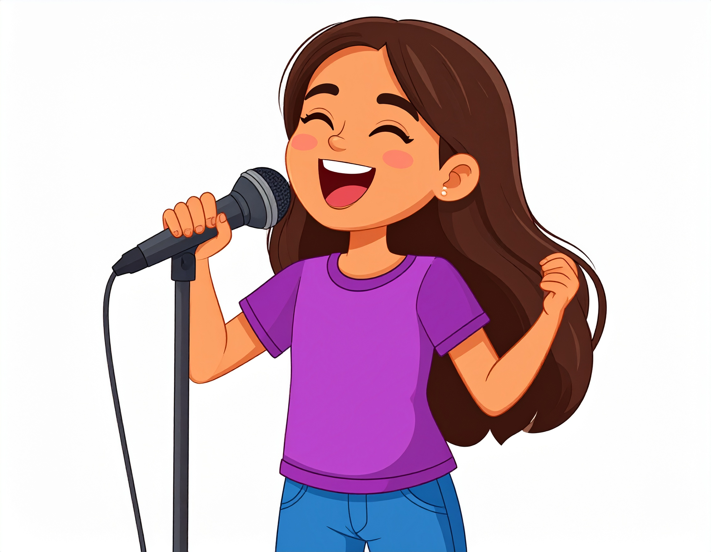

All About Me
Contact
Interests
Home
Classes
My Songs
Home
What is your name?
Click here to enter your name
Family:
Arushi
Older sister
Going to John's Hopkins to pursue her passion in medicine
Always makes me laugh
Mom
Doctor in Internal Medicine
Loves garderning
Makes yummy food and likes to bake with me 😋
Dad
Software Engineer
Makes cringey jokes
Loves hiking
Friends:
Aashna: DIE-HARD Lana Del Rey and Alex Turner fan, loves tirimisu, forever my bathroom ritual buddy
Amelia: Does Judo in her free time, plays a billion sports, has SUPER BIG muscles that she named
Audrey: Amazing at ballet, loves dragons, does art
Ava: Learning to play the violin, does gymnastics
Cathegrne: Stunning at the violin, even though she denys it, lacks good sarcasm
Cathy: Magnficent at ballet, my debate buddy, went from being tiny to all grown up!
Derek G: Graduated EPS in 2013, he is the spirit of the friend group!!
Derek Y: Once a pickle, always a pickle, my BCA buddy since 2nd Grade
Ivanka: Corgi-lover, perfect-pitchist, slays at piano...but has interesting music taste
Juni: Plays softball and piano, has an adorable cat
Lena: SLAYS at theater and singing, does art and speaks fluent french
Maya: Furry at heart, amazing at drawing, plays volleyball
Shelley: Plays the piano, does debate,
Solaina: Plays the piano (SO good at composing tunes), my TMAC-walk buddy since 5th grade, skiis
Vera: VARIEEE, my debate and redmond buddy, has an adorable cat named 🥜
Fun Facts About Me:
Eighth grade student at Eastside Prepratory School (EPS for short)
Loves pandas, fav animal of ALL TIME
Aspires to become a lawyer or some profession in law
Nickname "Sunny" for the sun
I'm an aqaurius, January born
Extraverted, always talking to people
Likes to play the piano while singing
Enjoys doing science and writing poetry/short stories
Extracirrciulars: Columbia Choirs, school debate team, non-profit volunteer work at CRY (Child Rights and You), track (during the spring)
School Clubs: Leadership Lab and Green Club

Above is an AI generated picture of myself